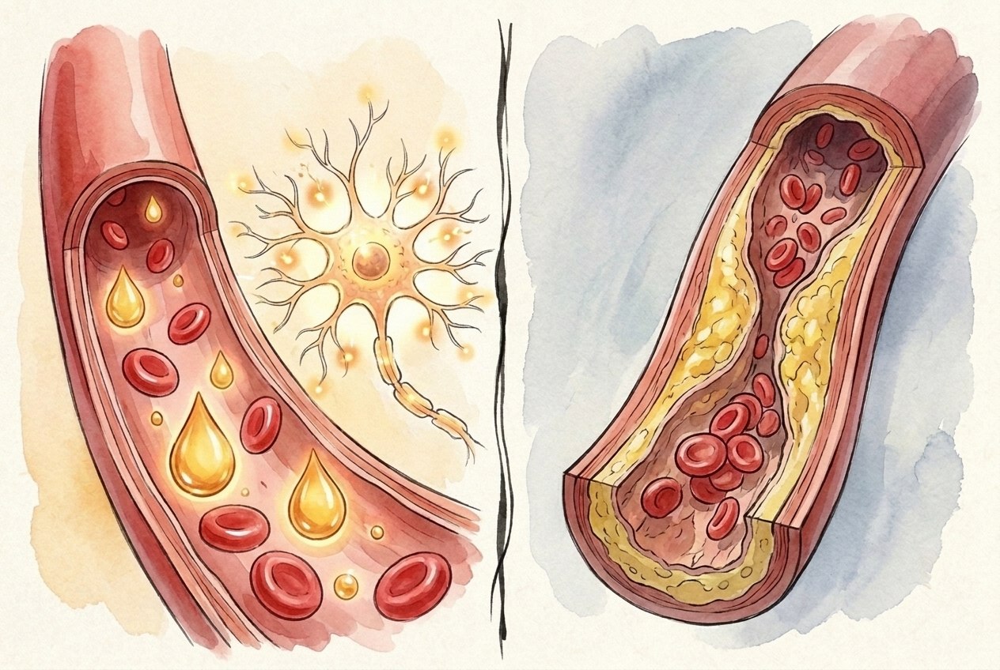
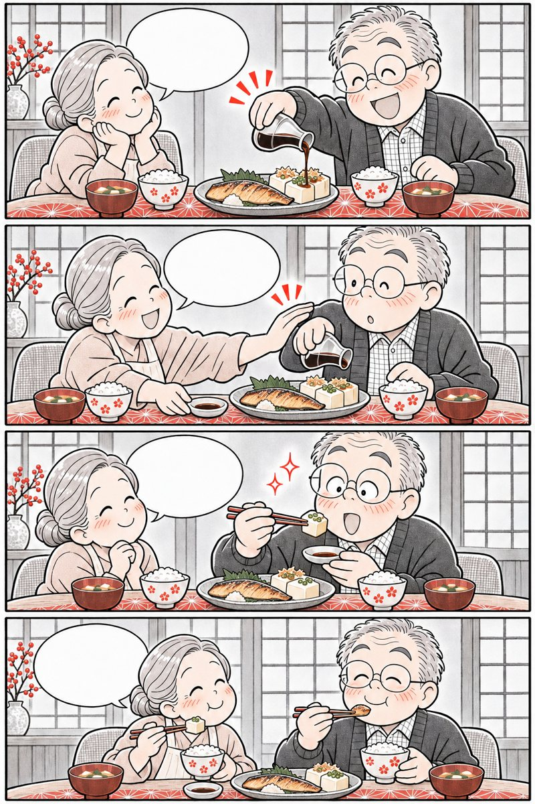
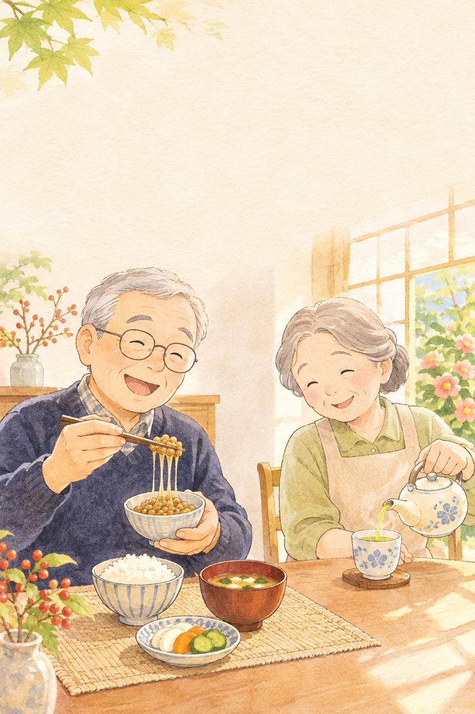

Hội Moaicó bạn già, não sáng kiểu Nhật
Bí quyết lập hội bạn tâm giao Moai của các cụ trăm tuổi đảo Okinawa giúp giải tỏa cô đơn, giữ thùy trán tinh anh và trái tim khỏe mạnh.
Mục lục
Bấm vào chương để đọc.

Có hội bạn già
trăm năm chẳng cô đơn
Truyền thống Moai của đảo trường thọ Okinawa
okinawa no moai to kizuna
Tại quần đảo Okinawa — nơi có tỷ lệ cụ ông cụ bà sống trên 100 tuổi cao nhất thế giới — chẳng ai phải đi qua tuổi già một mình nhờ có “Moai”.
Những con số từ Nghiên cứu Lão khoa Nhật
nguy cơ sa sút trí tuệ ở người cao tuổi tham gia nhóm bạn bè, câu lạc bộ đều đặn (Nghiên cứu JAGES)
quy mô nhóm bạn tâm giao vừa vặn của người Okinawa để thăm hỏi nhau hàng tuần suốt nhiều thập kỷ
sống thu mình, thiếu kết nối xã hội gây hại cho mạch máu tương đương hút 15 điếu thuốc/ngày
khả năng duy trì vận động tự lập ở những cụ ông cụ bà trò chuyện ngoài xã hội mỗi ngày

Trong tiếng Okinawa có từ “Yuimaru” (ゆいまーる) — nghĩa là vòng tròn gắn kết, nâng đỡ nhau để không ai bị bỏ lại phía sau!
Nguồn: Saito M., Kondo K. et al., Japan Gerontological Evaluation Study (JAGES) & Okinawa Centenarian Study.
Về hưu không có nghĩa là khép cửa ở trong nhà
 Từ ngày nghỉ hưu, ở nhà một mình buồn quá…
Mình lập hội Moai 4–5 ông bà hàng xóm nhé!
Sáng đi bộ chung, chiều uống trà đố vui!
Có bạn già chuyện trò, thấy trẻ ra 10 tuổi!
Từ ngày nghỉ hưu, ở nhà một mình buồn quá…
Mình lập hội Moai 4–5 ông bà hàng xóm nhé!
Sáng đi bộ chung, chiều uống trà đố vui!
Có bạn già chuyện trò, thấy trẻ ra 10 tuổi!
Một cuộc hẹn uống trà mỗi tuần cùng vài người bạn già là liều thuốc chống lão hóa não kỳ diệu nhất.
Vì sao có bạn tâm giao lại giữ mạch máu trẻ?
Khi con người cảm thấy cô đơn hoặc thu mình, não bộ bật chế độ cảnh giác làm tăng hormone căng thẳng Cortisol và gây co mạch. Ngược lại, khi trò chuyện vui vẻ cùng bạn bè:

Thu mình: tăng Cortisol, não ì trệ Hội Moai: tăng Oxytocin, sáng thùy trán- Hormone gắn kết Oxytocin: ánh mắt trìu mến, tiếng cười và sự sẻ chia khi gặp bạn già kích thích tuyến yên tiết Oxytocin — chất có khả năng làm dịu viêm mạch máu và bảo vệ cơ tim.
- Mạng lưới an toàn sống còn: khi các cụ hẹn gặp nhau mỗi sáng, chỉ cần một người vắng mặt hay có dấu hiệu mệt lạ là cả nhóm phát hiện và hỗ trợ kịp thời ngay trong “giờ vàng”.
Nguồn: Holt-Lunstad J. et al., PLoS Medicine; Viện Lão khoa Quốc gia Nhật Bản (NCGG).
Bật tivi nói suốt ngày là hết cô đơn rồi?

Nhiều gia đình nghĩ trong nhà có tiếng tivi hoặc lướt mạng xã hội là đủ vui. Nhưng não bộ phân biệt rất rõ:
Bật tivi cả ngày cho nhà có tiếng người là đủ
Xem tivi một chiều làm thùy trán tắt nghỉ; chỉ đối thoại 2 chiều mới kích hoạt não bộ
Già rồi ngại làm phiền hàng xóm, cứ ở yên trong nhà
Ai ở tuổi 50+ cũng mong có bạn bầu bạn; một lời chào buổi sáng mở đầu tình bạn quý
Hội họp bạn bè là phải ăn nhậu linh đình tốn kém
Hội Moai chỉ cần ấm trà xanh, đĩa hoa quả hoặc cùng đi bộ công viên
Chỉ cần con cháu cuối tuần gọi điện là đủ
Bên cạnh con cháu, rất cần 3–5 người bạn đồng niên cùng thế hệ để tâm sự mỗi ngày
Nguồn: Nghiên cứu Đánh giá Lão khoa Nhật Bản (JAGES).
Tự rà 9 dấu hiệu thu mình & “Lười giao tiếp”

Bấm vào những câu đúng với bố mẹ hoặc chính mình trong 1 tháng qua:
Từ 2 dấu hiệu trở lên là lời nhắc nên chủ động kết nối lại với bạn già và tham gia sinh hoạt nhóm mỗi tuần.

Trò chuyện vui
bật sáng thùy trán
Bài tập toàn diện nhất cho 100 tỷ tế bào thần kinh
kaiwa de zentōyō kasseika
Một cuộc trò chuyện trực tiếp 15 phút đòi hỏi não bộ làm việc gấp nhiều lần so với ngồi giải ô chữ một mình.
3 vùng não cùng “bừng sáng” khi gặp bạn bè
Qua máy chụp cộng hưởng từ chức năng (fMRI), các nhà khoa học thần kinh Nhật Bản nhận thấy khi hai người lớn tuổi trò chuyện trực tiếp, 3 vùng não quan trọng nhất đồng loạt được tưới máu dồi dào:
- Nghe & Hiểu
Thùy thái dương & Hồi hải mã liên tục lục tìm ký ức và tên gọi để hiểu câu chuyện của người bạn đối diện.
- Thấu cảm
Hệ thống nơ-ron gương quan sát nét mặt, nụ cười, giọng nói của bạn để đồng cảm và sẻ chia cảm xúc.
- Ứng biến
Vỏ não trước trán (Thùy trán) sắp xếp ngôn từ, pha trò hài hước và phản hồi ngay trong tích tắc.

Khi vừa đi bộ công viên vừa trò chuyện cùng bạn già, lưu lượng máu lên não tăng gấp đôi so với đi bộ lặng lẽ một mình!
Nguồn: GS. Kawashima Ryuta (Đại học Tohoku) & Trung tâm Lão khoa Tokyo (TMIG).
Ván cờ tướng và ấm trà chiều rộn tiếng cười

Ngồi xem tivi có 15 phút là mắt ông díp lại… Bác Tanaka sang rủ đánh cờ và thưởng trà kìa! Nước cờ này cao đấy, để tôi tính xem nào! Vừa tính cờ vừa cười vang, đầu óc tỉnh hẳn!Nụ cười sảng khoái cùng bạn già làm tăng ngay hoạt tính tế bào miễn dịch NK và giảm đau mỏi xương khớp.
Sức mạnh của bữa ăn có bạn (Kyōshoku · 共食)
Y học lão khoa Nhật Bản rất cảnh giác với hiện tượng Koshoku (孤食 — Ăn cơm cô độc một mình) ở người lớn tuổi:
 Ăn một mình (Koshoku): ăn qua loa, dễ suy cơ
Ăn cùng nhau (Kyōshoku): đủ chất, tiết dịch vị tốt
Ăn một mình (Koshoku): ăn qua loa, dễ suy cơ
Ăn cùng nhau (Kyōshoku): đủ chất, tiết dịch vị tốt
- Đa dạng món ăn hơn: người cao tuổi ăn một mình thường ngại nấu nướng, chỉ ăn cơm chan canh hoặc mì gói dẫn đến thiếu đạm; khi ăn cùng bạn đời hoặc nhóm bạn sẽ ăn đủ cá, đậu, rau củ.
- Tiết nước bọt và enzyme tiêu hóa: không khí ấm cúng trên bàn ăn kích thích dây thần kinh phế vị giúp dạ dày co bóp êm và hấp thu trọn vẹn dưỡng chất.
Nguồn: Tani Y. et al., Age and Ageing — Eating alone and mortality in older Japanese adults (JAGES).

Gặp nhau chỉ than thở bệnh tật, chuyện buồn?
Nội dung cuộc trò chuyện quyết định việc buổi gặp gỡ mang lại năng lượng tích cực hay làm nhau thêm lo lắng:
Làm nhau mệt mỏi
- Suốt buổi chỉ kể lể bệnh tật, dọa nhau tin đồn chưa kiểm chứng
- Tranh cãi hơn thua gay gắt làm tăng vọt huyết áp
- So bì con cái hoặc khuyên nhau tự ý đổi thuốc bác sĩ
Chuyện trò kiểu Moai
- Chia sẻ mẹo nấu món ngon, chăm cây, kỷ niệm đẹp thời trẻ
- Khen ngợi và khích lệ nhau duy trì đi bộ, tập dưỡng sinh
- Luôn kết thúc buổi gặp bằng nụ cười và lời hẹn tuần sau
4 hoạt động “Khỏe tim – Sáng não” cùng hội bạn
Không cần cầu kỳ, 4 hoạt động giản dị này rất hợp với khu phố và làng xóm Việt Nam:
Hẹn 3–4 người bạn đi bộ công viên và tập dưỡng sinh / Radio Taiso lúc 6h30 sáng
Thưởng trà xanh ấm trước 15h chiều, chơi cờ hoặc giải đố chữ rèn thùy trán
Chia sẻ nhánh cây cảnh, công thức nấu canh rong biển, cá kho nhạt muối
Cùng hát những bài ca xưa hoặc đọc thơ thành tiếng giúp nở phổi, sáng trí nhớ
Làm ngay
- Lưu số điện thoại của 3–5 người bạn thân và người nhà của họ
- Chủ động gọi điện hỏi thăm nếu thấy bạn vắng buổi đi bộ sáng
Đừng làm
- Ngồi đánh cờ một tư thế quá 60 phút không đứng dậy vươn vai
- Mời nhau uống rượu bia hoặc hút thuốc lá khi tụ họp
Nguồn: Hướng dẫn Câu lạc bộ Sức khỏe Cộng đồng (Kayoi-no-ba · 通いの場) — MHLW Nhật Bản.
Tính chỉ số “Kết nối Moai” trong tuần
Gặp gỡ bạn bè từ 3 lần/tuần trở lên giúp giảm 46% nguy cơ suy giảm nhận thức theo nghiên cứu JAGES Nhật Bản.

Hội Moai nhỏ
tình thân trọn đời
3 nguyên tắc giữ tình bạn già bền chặt
moai no tsukurikata
Một hội Moai bền vững suốt 20–30 năm không cần đông người, chỉ cần 3 đến 5 người bạn sống gần nhau và thương quý nhau thật lòng.
Vì sao nhóm Moai Okinawa bền vững suốt đời?
- Nguyên tắc 1: Gần nhà, tiện bước chân
Chọn những người bạn trong cùng khu phố, tòa chung cư hoặc câu lạc bộ dưỡng sinh chỉ cách nhau 5–10 phút đi bộ.
- Nguyên tắc 2: Không gánh nặng tiền bạc
Mỗi buổi gặp chỉ góp chung gói trà xanh, vài củ khoai luộc hoặc trái cây theo mùa để ai cũng thoải mái tham gia lâu dài.
- Nguyên tắc 3: Nhắc nhau giữ gìn sức khỏe
Cùng nhắc nhau đo huyết áp sáng, uống nước ấm, ăn nhạt và đi khám định kỳ hàng năm.
Khi có hội bạn cùng nhắc nhau “Bác đã đo huyết áp và uống Omega-3 sáng nay chưa?”, tỉ lệ tuân thủ tăng gấp đôi!
Nguồn: Buettner D., The Blue Zones — Lessons for Living Longer from the People Who've Lived the Longest.
Cuộc điện thoại 8 giờ sáng cứu nguy kịp thời
 6h30 rồi mà chưa thấy bác Yamada ra công viên?
Mọi hôm bác ấy đúng giờ lắm, gọi hỏi ngay!
May quá ông bà gọi, sáng nay tôi hơi choáng!
Có hội bạn quan tâm nhau, yên tâm biết mấy!
6h30 rồi mà chưa thấy bác Yamada ra công viên?
Mọi hôm bác ấy đúng giờ lắm, gọi hỏi ngay!
May quá ông bà gọi, sáng nay tôi hơi choáng!
Có hội bạn quan tâm nhau, yên tâm biết mấy!
Sự quan tâm tinh tế mỗi sáng giữa những người bạn già là chiếc phao an toàn quý giá cho cả gia đình.
Hiệu ứng “Lan tỏa sức khỏe” trong nhóm bạn
Nghiên cứu mạng lưới xã hội y khoa cho thấy thói quen sống khỏe có tính “lây lan tích cực” rất mạnh giữa những người bạn thân:
 Đi bộ có bạn: duy trì bền bỉ gấp 3 lần
Cười sảng khoái: giãn mạch, tăng kháng thể IgA
Đi bộ có bạn: duy trì bền bỉ gấp 3 lần
Cười sảng khoái: giãn mạch, tăng kháng thể IgA
- Vượt qua cơn lười buổi sáng: đi bộ một mình rất dễ bỏ cuộc khi trời hơi se lạnh; nhưng biết có 3 người bạn đang chờ ở cổng công viên sẽ giúp ông bà hào hứng bước ra.
- Kết hợp nhóm Zalo chữ to: những ngày mưa bão không gặp trực tiếp được, các cụ có thể gửi ảnh bữa cơm thanh đạm hoặc chậu hoa mới nở vào nhóm Zalo chung để trò chuyện.
Nguồn: Khoa Y tế Công cộng — Đại học Chiba & Đại học Kyoto.

Thấy bạn uống thuốc gì hiệu quả là mua uống theo?
Chơi thân với nhau rất quý, nhưng có ranh giới y khoa cần nhớ rõ:
Thói quen nguy hiểm
- Lấy đơn thuốc huyết áp, tiểu đường của bạn về tự mua uống
- Rủ nhau mua các loại thuốc hoàn tán trôi nổi không rõ nguồn gốc
- Ép bạn phải tập bài thể dục nặng giống hệt mình
Tình bạn thông thái
- Chia sẻ cẩm nang kiến thức sức khỏe chính thống cùng đọc
- Khuyên bạn đi khám bác sĩ chuyên khoa để có đơn thuốc riêng
- Lắng nghe cơ thể từng người để vận động vừa sức
Nhịp kết nối “Sáng bạn già – Tối gia đình”
Cân bằng giữa không gian giao lưu bạn đồng niên ban ngày và sự ấm áp bên con cháu buổi tối:
Ban ngày (Cùng hội Moai)
- 6h30 sáng: Đi bộ công viên, tập Radio Taiso cùng 3–5 người bạn
- 9h00 hoặc 14h00 (2–3 buổi/tuần): Thưởng trà xanh, đánh cờ, đọc báo
- Gọi điện hỏi thăm nếu có người bạn nào vắng mặt
Buổi tối (Cùng gia đình)
- 18h30: Ăn tối quây quần, không bật tivi/điện thoại trong bữa cơm
- Kể cho con cháu nghe 1 câu chuyện vui hoặc kỷ niệm đẹp
- 20h00: Ngâm chân nước ấm và nghỉ ngơi yên tĩnh

Con cháu hãy khuyến khích và tạo điều kiện cho bố mẹ gặp gỡ bạn già — đó là món quà tinh thần tuyệt vời nhất!
Nguồn: Trung tâm Nghiên cứu Trường thọ Okinawa.
Sổ theo dõi Kết nối & Niềm vui 7 ngày
Ghi số phút trò chuyện trực tiếp cùng bạn bè/người thân và số lần cười sảng khoái mỗi ngày (VD: 30 phút · 5 lần cười).
Mẹo nhỏ cho ngày mưa không ra ngoài được
Hãy gọi điện thoại hỏi thăm một người bạn cũ hoặc người họ hàng ở xa trong 10–15 phút — giọng nói thân thương cũng làm thùy trán bừng sáng!
Số liệu chỉ lưu riêng tư ngay trong điện thoại hoặc máy tính của bạn.

Dưỡng não bên trong
rèn não bên ngoài
Kết hợp DHA, EPA, Astaxanthin với giao tiếp Moai
DHA to kaiwa no sōjō kōka
Trò chuyện cùng bạn bè giống như tập thể dục cho não, còn DHA, EPA và Astaxanthin chính là nguồn nguyên liệu xây nên màng tế bào thần kinh mềm mại.
Hai nửa hoàn hảo của trí nhớ tuổi 50+
Viện Nghiên cứu Lão khoa Quốc gia Nhật Bản (NCGG) chỉ ra rằng để giữ trí nhớ sắc bén tới năm 80–90 tuổi, não bộ cần đồng thời “Nguyên liệu cấu trúc” và “Kích thích giao tiếp”:
lượng chất béo cấu tạo nên chất xám não bộ và điểm vàng võng mạc mắt là DHA — dưỡng chất cơ thể không tự tổng hợp đủ mà phải nạp từ cá biển và dầu cá.
Khi màng tế bào thần kinh được cung cấp đủ DHA, EPA và bảo vệ khỏi gốc tự do nhờ sắc đỏ Astaxanthin, các khớp thần kinh (synapse) sẽ truyền tín hiệu nhanh nhạy mỗi khi ông bà trò chuyện, tính cờ hay kể chuyện cùng hội Moai.

Bổ sung DHA/EPA mỗi sáng + Trò chuyện cùng bạn già mỗi ngày giúp nhớ tên nhanh, mắt sáng rõ và tinh thần phơi phới!
Nguồn: Otsuka R. et al., National Center for Geriatrics and Gerontology (NCGG, Nhật Bản).
Nhớ vanh vách tên các bạn cũ nhờ chăm não đúng cách
 Gặp bạn cũ mà ông cứ quên mất tên, ngại quá!
Não cần thêm DHA và luyện phản xạ nói chuyện đấy!
Mình uống Omega-3 đỏ sau ăn và đi họp hội Moai nhé!
Giờ nhớ vanh vách cả chuyện 30 năm trước rồi!
Gặp bạn cũ mà ông cứ quên mất tên, ngại quá!
Não cần thêm DHA và luyện phản xạ nói chuyện đấy!
Mình uống Omega-3 đỏ sau ăn và đi họp hội Moai nhé!
Giờ nhớ vanh vách cả chuyện 30 năm trước rồi!
Chăm sóc vi mạch não và màng tế bào thần kinh từ sớm giúp ông bà tự tin giao tiếp ở mọi cuộc vui.
Mắt tinh, não nhạy — Tự tin bước ra với bạn bè
Một trong những lý do khiến người lớn tuổi ngại đi gặp bạn bè là do mắt nhìn mờ mỏi, đọc báo khó khăn hoặc đầu óc hay nặng nề:
 1. DHA + EPA + Dầu gan cá mập: tưới máu thùy trán
2. Sắc đỏ Astaxanthin: bảo vệ mắt & màng nơ-ron
1. DHA + EPA + Dầu gan cá mập: tưới máu thùy trán
2. Sắc đỏ Astaxanthin: bảo vệ mắt & màng nơ-ron
- Nuôi dưỡng thị lực khi đọc sách, đánh cờ: DHA và Astaxanthin đi qua hàng rào máu – võng mạc giúp giảm mỏi điều tiết mắt, giúp ông bà đọc báo và nhìn quân cờ rõ nét.
- Duy trì lưu lượng máu não: EPA giúp dòng máu qua hệ vi mạch não trơn tru, cung cấp đủ oxy cho các cuộc trò chuyện sôi nổi.
Nguồn: Hội Nhãn khoa Nhật Bản & Hiệp hội Nghiên cứu Astaxanthin Nhật Bản.

Hay quên tên người quen là “chuyện bình thường tuổi già”?
Đừng vội buông xuôi khi thấy mình hay quên chìa khóa hoặc ngại gặp người lạ:
Thói quen làm não lão hóa nhanh
- Thấy hay quên nên xấu hổ, càng thu mình ở nhà một mình
- Bữa ăn kiêng khem quá mức, thiếu hẳn cá biển và chất béo tốt
- Chỉ ngồi xem tivi thụ động từ sáng đến tối
Trẻ hóa não kiểu Nhật
- Càng hay quên càng nên ra ngoài trò chuyện, đọc sách thành tiếng
- Ăn 3–4 bữa cá/tuần hoặc bổ sung DHA, EPA, Astaxanthin mỗi ngày
- Ghi chép sổ tay 3 việc vui trong ngày trước khi đi ngủ
7 ngày “Dưỡng não – Gặp bạn” đều đặn
Thử 7 ngày liền
Uống đủ DHA & trò chuyện, đóng dấu
Ấm tình con cháu
vui tuổi xế chiều
Nghệ thuật lắng nghe giữa các thế hệ (Keichō)
kazoku no danran to keichō
Bên cạnh hội bạn già ngoài khu phố, 15 phút trò chuyện ấm áp không màn hình cùng con cháu mỗi tối là ngọn lửa sưởi ấm trái tim người lớn tuổi.
Nghệ thuật “Keichō” (傾聴 — Lắng nghe bằng cả trái tim)
Chữ Hán của từ Lắng nghe (聴) trong tiếng Nhật được ghép từ chữ Tai (耳), chữ Mắt (目) và chữ Một trái tim (一心). Để cuộc trò chuyện giữa cha mẹ 50+ và con cháu luôn vui vẻ:
trò chuyện chất lượng mỗi ngày — khi cả nhà đặt điện thoại xuống, nhìn vào mắt nhau và hỏi thăm 3 câu hỏi tích cực — giúp giảm hẳn cảm giác cô đơn tuổi già.
Với các cụ ông cụ bà, điều quý nhất để giữ hòa khí với con cháu là quy tắc “Khen ngợi trước – Góp ý nhẹ nhàng sau”; còn với con cái, hãy kiên nhẫn nghe bố mẹ kể lại chuyện cũ với nụ cười biết ơn.
Khi ông bà nhờ cháu chỉ cách chụp ảnh cây hoa hay gọi video, cả hai thế hệ đều thấy mình có ích và gắn bó hơn!
Nguồn: Hiệp hội Tâm lý học Lão khoa Nhật Bản.
Giỏ đựng điện thoại trong bữa cơm tối
 Đến bữa cơm mà ai cũng dán mắt vào điện thoại…
Hôm nay cả nhà cho điện thoại “ăn cơm” trong giỏ nhé!
Cháu kể ông bà nghe chuyện ở trường hôm nay đi!
Bữa cơm rộn tiếng cười, thức ăn ngon gấp đôi!
Đến bữa cơm mà ai cũng dán mắt vào điện thoại…
Hôm nay cả nhà cho điện thoại “ăn cơm” trong giỏ nhé!
Cháu kể ông bà nghe chuyện ở trường hôm nay đi!
Bữa cơm rộn tiếng cười, thức ăn ngon gấp đôi!
Ba mươi phút bữa tối không màn hình điện thoại là món quà gắn kết vô giá cho mọi gia đình hiện đại.
Vì sao kể chuyện xưa cho cháu lại rất bổ não?
Trong y học lão khoa Nhật Bản có liệu pháp Hồi tưởng (Reminiscence Therapy · 回想法) rất nổi tiếng:
 Kể kỷ niệm xưa: kích hoạt Hồi hải mã
Cảm giác có ích: tăng Serotonin hạnh phúc
Kể kỷ niệm xưa: kích hoạt Hồi hải mã
Cảm giác có ích: tăng Serotonin hạnh phúc
- Đánh thức kho ký ức dài hạn: khi ông bà mở cuốn album ảnh cũ kể cho cháu nghe về thời thanh xuân, món ăn truyền thống hay nghề nghiệp xưa, mạng lưới thần kinh giữa hồi hải mã và vỏ não được củng cố mạnh mẽ.
- Nuôi dưỡng lòng tự trọng tuổi già: cảm nhận mình là “người giữ lửa ký ức” của gia đình giúp người lớn tuổi luôn yêu đời và ngủ ngon hơn.
Nguồn: Tadaka E. et al., Geriatrics & Gerontology International — Reminiscence therapy in Japanese elderly.

Bố mẹ già kể đi kể lại một chuyện là gắt gỏng?
Ngắt lời: “Chuyện này bố/mẹ kể chục lần rồi!”
Mỉm cười lắng nghe và hỏi thêm chi tiết mới để bố mẹ vui lòng
Vừa nghe ông bà nói vừa cúi đầu bấm điện thoại
Đặt điện thoại xuống, nhìn vào mắt ông bà và gật đầu hưởng ứng
Ông bà mệt trong người nhưng giấu con cái vì sợ phiền
Chia sẻ thật tình trạng sức khỏe để con cháu cùng đồng hành chăm sóc sớm
Tính thời lượng trò chuyện ấm áp mỗi ngày
Thử 7 ngày
Trò chuyện ấm áp mỗi ngày, đóng dấu
Có lý do vui
để chào buổi sáng
Nghệ thuật tìm Ikigai (生きがい) tuổi 50+
ikigai to kenkō chōju
Trong tiếng Okinawa không có từ “nghỉ hưu” — thay vào đó là từ “Ikigai”: lý do khiến bạn mỉm cười mở mắt thức dậy mỗi buổi sáng.
Ikigai không phải điều vĩ đại, mà là niềm vui nhỏ
Nghiên cứu Ohsaki theo dõi hơn 43.000 người Nhật trong 7 năm cho thấy những người có Ikigai giảm đáng kể nguy cơ tử vong do bệnh tim mạch và đột quỵ.
- 1. Một sinh vật nhỏ cần bàn tay mình chăm sóc
Một luống rau sạch, vài chậu lan ngoài ban công hay chú mèo nhỏ khiến mỗi buổi sáng của ông bà đều có việc ý nghĩa để làm.
- 2. Một nhóm bạn Moai đang chờ gặp
Cuộc hẹn đi bộ lúc 6h30 sáng hay buổi trà chiều thứ Năm giúp tuần lễ luôn có nhịp điệu vui tươi.
- 3. Một kỹ năng nhỏ rèn luyện mỗi ngày
Tập viết chữ đẹp, học nấu món mới, đọc sách hoặc tập kể chuyện lưu loát.
Cảm giác mình vẫn có ích và được yêu thương chính là nguồn năng lượng giữ cho trái tim và bộ não trẻ mãi!
Nguồn: Sone T. et al., Psychosomatic Medicine (2008) — Sense of life worth living (Ikigai) and mortality in Japan.
Niềm vui mỗi sáng của ông bà Sato
 Sáng dậy tưới chậu hoa trà vừa hé nụ!
Ra công viên gặp hội bạn Moai cười rộn rã!
Chiều đọc sách và kể chuyện xưa cho các cháu!
Mỗi ngày đều là một món quà đáng sống!
Sáng dậy tưới chậu hoa trà vừa hé nụ!
Ra công viên gặp hội bạn Moai cười rộn rã!
Chiều đọc sách và kể chuyện xưa cho các cháu!
Mỗi ngày đều là một món quà đáng sống!
Tuổi tác chỉ là con số khi tâm hồn vẫn rộng mở đón bạn hiền và niềm vui mới.
Vòng tròn cộng hưởng: Hội Moai — Não sáng — Tim vui
Khi kết hợp lối sống gắn kết Moai với dinh dưỡng DHA/EPA và vận động ngoài trời, tuổi già trở thành quãng đời bình yên và rực rỡ nhất:
 Hội bạn Moai: giảm cô đơn, tăng Oxytocin
DHA + Trò chuyện: giữ thùy trán tinh anh
Hội bạn Moai: giảm cô đơn, tăng Oxytocin
DHA + Trò chuyện: giữ thùy trán tinh anh
- Duy trì phản xạ ngôn ngữ: bài thử kể tên các niềm vui hoặc món ăn yêu thích trong 30 giây dưới đây giúp kiểm tra và đánh thức vùng ngôn ngữ Broca ở thùy trán.
- Hãy chia sẻ ngay hôm nay: sau khi làm thử bài tập 30 giây, hãy gửi cuốn cẩm nang này cho 3 người bạn thân nhất để cùng lập hội Moai sống khỏe!
Nguồn: Trung tâm Nghiên cứu Trường thọ Quốc gia Nhật Bản (NCGG).

Đã ngoài 65–70 tuổi thì làm sao kết bạn mới được?
Già rồi tính tình khó đổi, chẳng kết bạn mới được
Ở tuổi nào cũng có những người hàng xóm hiền hậu đang mong có bạn đi bộ cùng
Nghỉ hưu là hết vai trò, chỉ ngồi chờ con cháu chăm
Ông bà giữ gìn sức khỏe, sống vui vẻ chính là chỗ dựa tinh thần lớn nhất cho con cháu
Ngại nói chuyện vì sợ nói vấp, quên từ
Càng nói chuyện nhiều, não càng mở thêm đường dẫn truyền mới để lưu loát hơn
30 giây kể tên bạn hiền & điều vui (Rèn thùy trán)
Kể to tên những người bạn quý mến trong 30 giây vừa rèn phản xạ ngôn ngữ thùy trán, vừa nhắc bạn gọi điện hỏi thăm họ hôm nay!